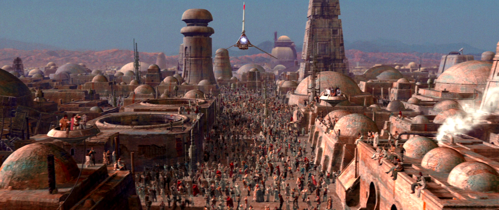
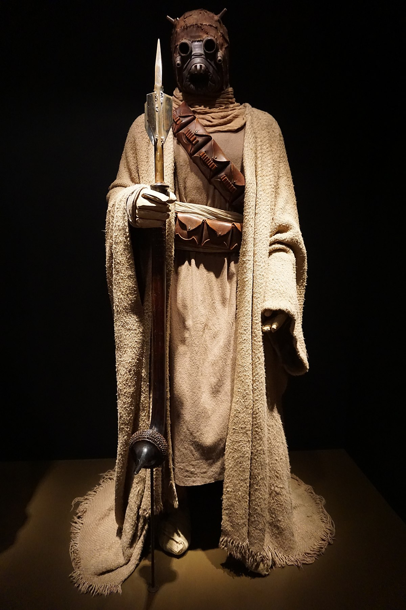
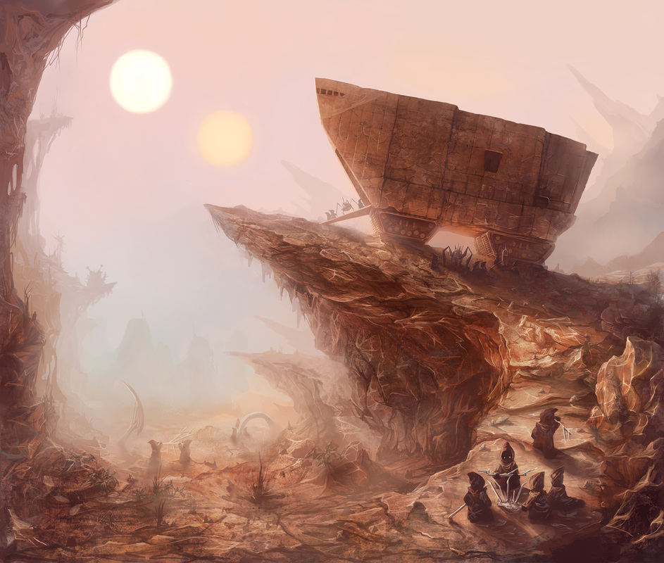

habitantes
Tatooine tenía solo unas pocas ciudades portuarias, incluidas Mos Espa y Mos
Eisley. Además de esas ciudades,
que atraían a muchos criminales, la mayoría de los colonos de Tatooine operaban granjas de humedad en la
extensión del desierto.
debido a la temperatura diurna peligrosamente alta del planeta y a las fuertes tormentas
de arena, la mayoría de los residentes de Tatooine mantenían su piel cubierta con materiales prácticos
que
absorben el sudor y limitan la exposición a la dañina radiación ultravioleta de los soles gemelos.

los colonos, habitantes legítimos del planeta, a menudo utilizaban vaporizadores de humedad debido a su
eficiencia
energética, lo que les dio como resultado uno de los equipos más cruciales para la supervivencia.
si bien los
vaporizadores individuales a menudo cuestan 500 créditos cada uno, algunas personas poseian varias
unidades, creando granjas de humedad. utilizando a menudo el agua extra para pequeños jardines hidropónicos,
pocos jardines producian lo suficiente como para obtener ganancias sustanciales.
Los Tusken Raiders, nativos del
planeta, eran una sociedad tribal nómada con estrictos códigos sociales y
morales, junto con límites territoriales definidos. ellos creían que toda el agua era sagrada y les pertenecía,
por lo que solían atacar los vaporizadores.
las frecuentes transgresiones coloniales en su territorio soberano,
junto con la colusión entre los viejos valores y la modernización galáctica, a menudo obligaron a los
Tusken a
atacar a los colonos a quienes temían y despreciaban con vehemencia.
Los Jawas también era una
especie nativa de Tatooine y estaban profundamente arraigados a
un
estilo de vida nómada.
a diferencia de los Tusken, a quienes intentaron evitar, los Jawas vendían
con frecuencia
la chatarra y los droides recolectados a los colonos dispersos en el planeta, ganándose la reputación de
comerciantes y vagabundos.
El Hutt Clan, era una colección de poderosas familias de clanes Hutt y un
gran sindicato del crimen en la galaxia que gobernaba una región del espacio, y estaba en cabeza del Gran
Consejo Hutt, un grupo de alto perfil de influyentes líderes Hutt ubicados en Nal Hutta.
 un imperio criminal fue dirigido por Jabba the
Hutt, miembro del Gran Consejo Hutt. Su base era el Palacio de
Jabba en Tatooine. Jabba era una figura importante en Tatooine, donde controlaba la
mayor parte de la piratería, la esclavitud y el tráfico de bienes ilegales que generaban la mayor parte de la
riqueza del planeta. También fue muy influyente en todo el Outer Rim como uno de los señores del crimen más
poderosos.
un imperio criminal fue dirigido por Jabba the
Hutt, miembro del Gran Consejo Hutt. Su base era el Palacio de
Jabba en Tatooine. Jabba era una figura importante en Tatooine, donde controlaba la
mayor parte de la piratería, la esclavitud y el tráfico de bienes ilegales que generaban la mayor parte de la
riqueza del planeta. También fue muy influyente en todo el Outer Rim como uno de los señores del crimen más
poderosos.
volver al inicio